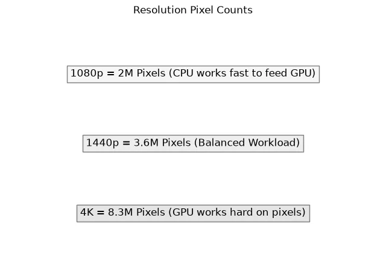
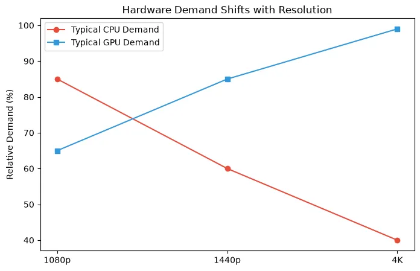
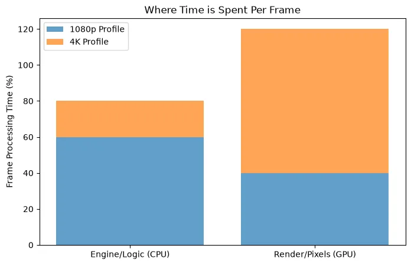

1080p vs 1440p vs 4K: How Resolution Changes CPU and GPU Bottlenecks
Understanding the relationship between resolution and PC performance is critical. We explain why 1080p exposes CPU limits, why 4K crushes GPUs, and how to choose the right hardware for your monitor.
One of the most misunderstood concepts in PC gaming is how monitor resolution affects system performance. Many gamers buy an incredibly powerful processor and a high-end graphics card, only to be confused when changing the game's resolution yields unexpected results.
To build a balanced PC, you must understand the interplay between 1080p, 1440p, and 4K resolutions and how they fundamentally shift the workload between your CPU and GPU.
Quick Answer / TL;DR
Resolution primarily affects the GPU. At 1080p, the GPU renders frames so quickly that the CPU often struggles to keep up, leading to a CPU bottleneck. At 4K, the massive pixel count heavily strains the GPU, making the CPU's job relatively easy, leading to a GPU bottleneck. 1440p offers a middle ground, providing a balanced workload between the processor and graphics card.
Why Resolution Changes the CPU/GPU Workload
To understand why resolution matters, we have to look at how a frame is made. The CPU acts as the manager. It calculates game logic, player input, AI, and physics. Once it finishes its calculations for a frame, it sends a "draw call" to the GPU.
The GPU receives the draw call, applies textures, lighting, and renders the pixels to your screen. Crucially: the CPU's workload does not significantly increase when you raise the resolution. Calculating the physics of a car crash takes the same amount of CPU processing power at 720p as it does at 4K. However, the GPU's workload increases massively with resolution.

1080p (FHD): The CPU Bottleneck Zone
1080p (1920x1080) consists of roughly 2.07 million pixels per frame. For modern graphics cards like the RTX 4060 or RX 7600, this is a very light workload. They can render these frames incredibly fast.
Why 1080p exposes CPU limitations: Because the GPU finishes drawing the frame so quickly, it immediately asks the CPU for the next one. If you have a powerful GPU at 1080p, it might be capable of 300 FPS. If your CPU can only calculate game logic fast enough for 150 FPS, you have a massive CPU bottleneck. At 1080p, especially in high refresh rate esports titles (CS2, Valorant), processor speed is king.
1440p (QHD): The Balanced Sweet Spot
1440p (2560x1440) contains roughly 3.68 million pixels—about 77% more pixels than 1080p. This resolution has become the gold standard for PC gaming because it offers a significant boost in visual clarity without requiring top-tier hardware.
Why 1440p is balanced: At this resolution, the GPU has to work much harder, taking longer to render each frame. Because the GPU takes longer, the CPU has more time to prepare the next set of instructions. This often results in a balanced system where both the CPU and GPU are highly utilized, avoiding severe bottlenecks on either end.
4K (UHD): The GPU Crusher
4K (3840x2160) boasts over 8.29 million pixels. That is four times the pixel count of 1080p. Rendering 4K gaming in modern AAA titles requires immense graphical processing power and large amounts of VRAM.
Why 4K is almost always a GPU bottleneck: At 4K, the GPU is working as hard as it possibly can. It might only be able to render 60 frames per second. Because the GPU is moving relatively slowly, even an older or mid-range CPU has plenty of time to prepare the next frame's instructions. Therefore, at 4K, the processor matters much less, and the graphics card dictates almost all the performance.

Comparison Summary: 1080p vs 1440p vs 4K
| Resolution | Pixel Count | Primary Hardware Focus | Common Bottleneck | Ideal Use Case |
|---|---|---|---|---|
| 1080p (FHD) | ~2 Million | CPU Speed & High Refresh | CPU Bottleneck | Esports, Budget Builds, 240Hz+ Monitors |
| 1440p (QHD) | ~3.6 Million | Balanced CPU & GPU | Balanced / Slight GPU | Modern AAA Gaming, 144Hz Monitors |
| 4K (UHD) | ~8.3 Million | Raw GPU Power & VRAM | Heavy GPU Bottleneck | Visual Fidelity, Single Player RPGs, 60Hz-120Hz |
High Refresh Rate Gaming (144Hz vs 240Hz)
Resolution is only half the equation; target frame rate is the other. If you are playing on a 60Hz monitor, your goal is 60 FPS. Most modern CPUs can easily calculate 60 FPS in most games, meaning you just need a GPU capable of 60 FPS at your chosen resolution.
However, if you buy a 1080p 240Hz monitor, you are demanding 240 frames every single second. This requires a phenomenally fast processor. Pushing extremely high frame rates is where top-tier processors (like AMD's X3D series or Intel's Core i9 series) show their true value.
Other Factors: Why Resolution Alone Doesn't Tell the Whole Story
While resolution is the biggest factor in shifting the bottleneck, other elements play a crucial role:
- Game Engine Differences: A game like *Cities: Skylines II* or *Microsoft Flight Simulator* simulates thousands of objects and relies heavily on the CPU, regardless of resolution. Conversely, *Cyberpunk 2077* with Overdrive Ray Tracing will crush any GPU, even at 1080p.
- Upscaling (DLSS / FSR): Technologies like NVIDIA DLSS and AMD FSR render the game at a lower internal resolution (e.g., 1080p) and upscale it to your monitor's resolution (e.g., 4K). By lowering the internal render resolution, you reduce the GPU workload, which can actually re-introduce a CPU bottleneck!
- Frame Generation: Generating fake frames increases the visual smoothness but doesn't increase the speed at which the CPU calculates the game state.

How to Use the Bottleneck Calculator for Resolution
Because resolution changes the math entirely, our PC Bottleneck Calculator requires you to select your intended resolution. If you pair an RTX 4090 with a Ryzen 5 5600X, the calculator will likely show a severe CPU bottleneck at 1080p. However, if you switch the calculator to 4K, that bottleneck percentage will drop significantly, as the massive GPU is finally given a workload heavy enough to slow it down to the CPU's pace.
Before you upgrade your CPU to fix a bottleneck, always enter your parts into the calculator to see if simply upgrading your monitor to a higher resolution might balance your system.
Frequently Asked Questions
Can increasing resolution fix a CPU bottleneck?
Yes. If you have a powerful GPU and a weaker CPU at 1080p, your CPU is bottlenecking the system. Increasing the resolution to 1440p or 4K forces the GPU to work much harder. While your maximum FPS won't increase, your GPU utilization will rise, and frame pacing will often become much smoother, effectively hiding the CPU limitation.
Is a GPU bottleneck at 1440p normal?
Yes, a GPU bottleneck is generally the desired state for a gaming PC. If your GPU usage is at 99% while gaming at 1440p, it means you are getting every drop of performance out of the most expensive component in your system.
Does 4K use more CPU or GPU?
4K resolution drastically increases the workload on the GPU. The CPU workload remains largely identical to 1080p. Therefore, 4K gaming relies heavily on graphics card performance and VRAM, while processor speed is much less important.
Should I buy a better CPU for 1080p gaming?
If you play competitive esports titles (Valorant, CS:GO, Apex Legends) at 1080p on a high refresh rate monitor (144Hz, 240Hz, or 360Hz), then yes. At 1080p, a fast CPU is absolutely critical to achieving and maintaining those massive frame rates.
Final Takeaway
When planning a PC build, your target resolution should be your very first decision. If you plan to game at 1080p, allocate more of your budget to a fast processor to avoid a CPU bottleneck. If you plan to game at 4K, save money on the processor and buy the absolute best graphics card you can afford. For those seeking the best of both worlds, 1440p remains the ultimate balanced sweet spot.